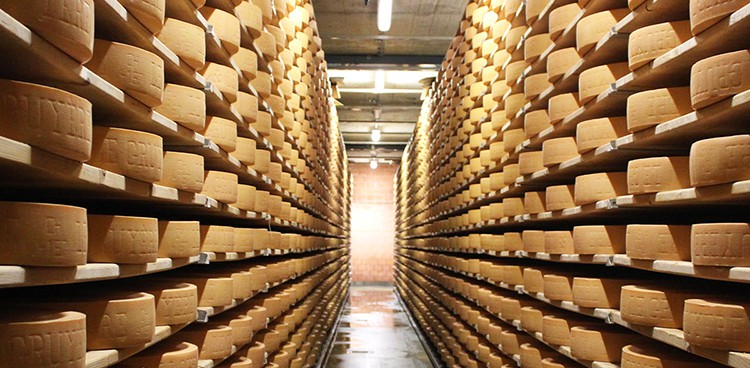

World of Cheese

Welcome to the World of Cheese! This is a site dedicated to our very own
cheese company that has been growing since 1887! Here, you can find information about our
company, learn about how we make our cheese, and even purchase some of your own world famous cheese!
How We Make Our Cheese
Here at world of cheese, we take pride in how much effort we put into making our delicious cheese.
Join us to learn about the entire process, step by step!
Step 1: High-Quality Milk

We obtain our milk from only the highest quality free-range farms
in the state of Wisconsin to make the best quality cheese we can offer.
Step 2: Into the Cheese Vat

We then put our pasturized milk into our state-of-the-art cheese vats.
Step 3: Adding Supplements

Enzymes are added to the milk that help turn it into cheese.
Step 4: Separating the Developing Cheese

We use stainless steel wires are used to cut our developing cheese into smaller curds.
Step 5: Salting

We add salt and other ingredients to improve the development of the cheese and add flavor.
Step 6: Packing Cheese Together

The cheese curds are packaged together and cut into distinct wheels of cheese.
Step 7: The Cheese Warehouse
We move the cheese to our cheese warehouse where it will mature over time.
Step 8: The Marketplace

Once the cheese is done maturing, it is ready to be sold!
We ship the cheese and sell it at one of our many cheese markets across the nation.
Step 9: Enjoy!

Our Impact
World of Cheese is one of the largest cheese producers in the United States, and for good reason!

The United States is the world's #1 consumer of cheese, and it is an honor to be one of its largest cheese providers!